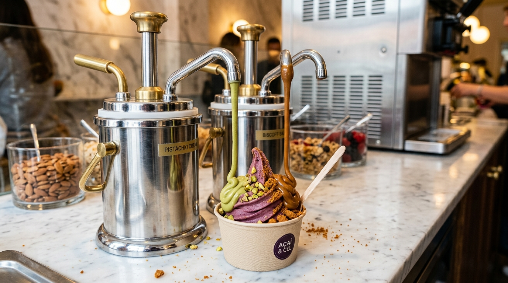
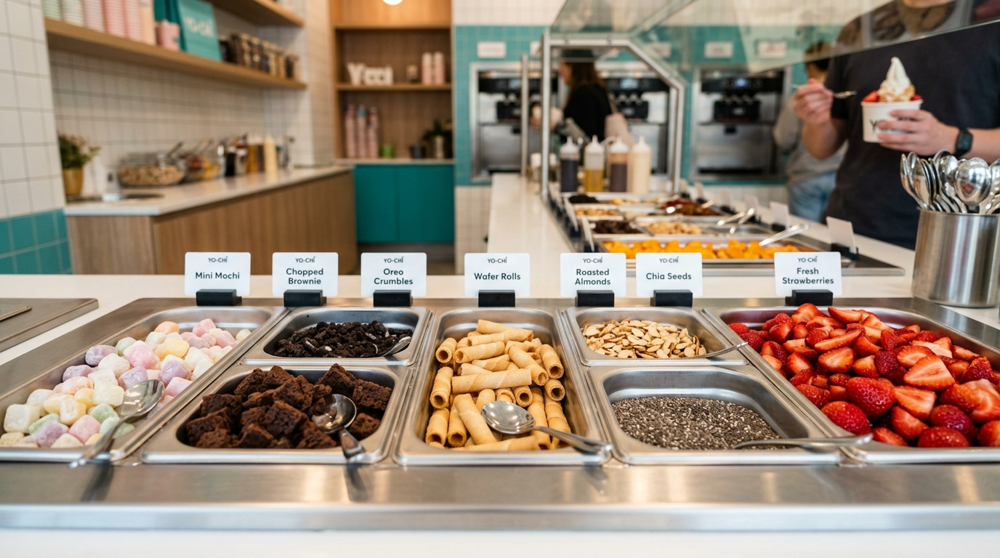

Replicating Yo-Chi's signature premium topping island & warm chrome sauce dispensers.
Freshly baked mini brownie cubes, chocolate lava cake bites, Oreo crumbles, and crisp love letter wafer rolls.
Chewy bite-sized matcha, vanilla, and strawberry mochi cubes prepped fresh daily in-house.
Replacing cheap squeeze bottles with polished heated chrome/brass pumps for continuous warm pistachio cream & biscoff drizzle.

